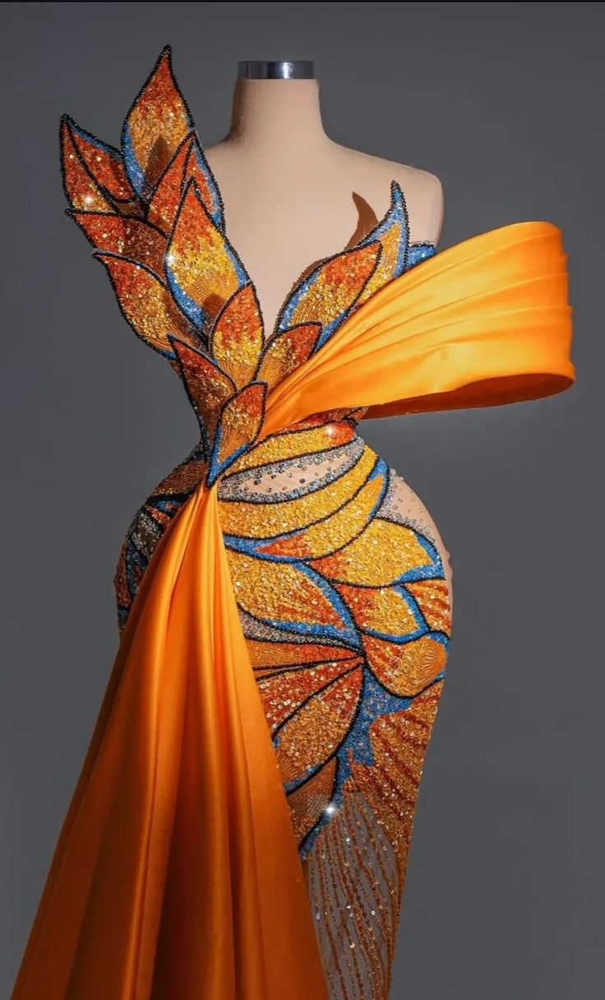
Made to MeasureLook 01
Quick View & Details
The Sunset Monarch Gown
01
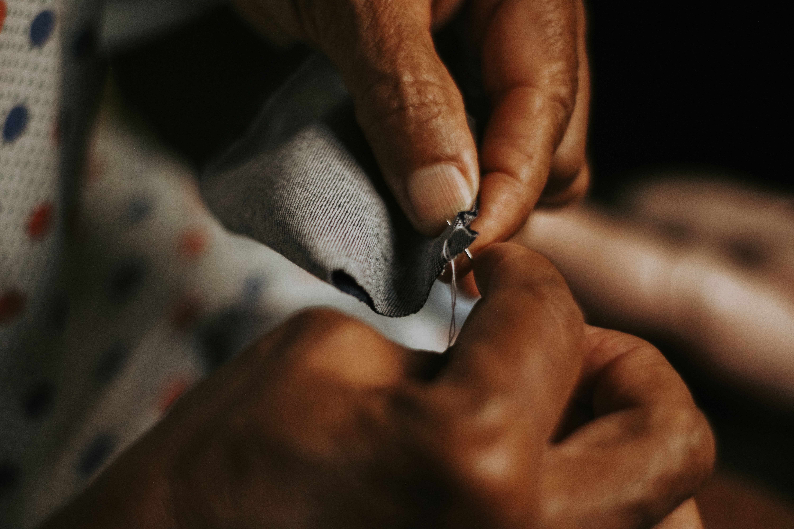
Every piece shown is a showcase of our craft. Any silhouette, fabric, or design can be custom-created to your exact measure.
Start a CommissionThe House
We craft for the individual who enters a room without needing to announce their presence. Every thread, clasp, and seam made by hand, uniquely for them.
2011
Founded, Accra
25
Pieces per drop
90+
Hours per garment
5
Master artisans
Lookbook
Every look shown can be recreated in your size, fabric, and colourway. Tap any piece to inspect the craft, save it, or inquire directly.

Made to MeasureLook 01
Quick View & Details
The Sunset Monarch Gown
01
 Made to Measure
Made to Measure
Look 02
Quick View & Details
The Executive Pinstripe Suit
02
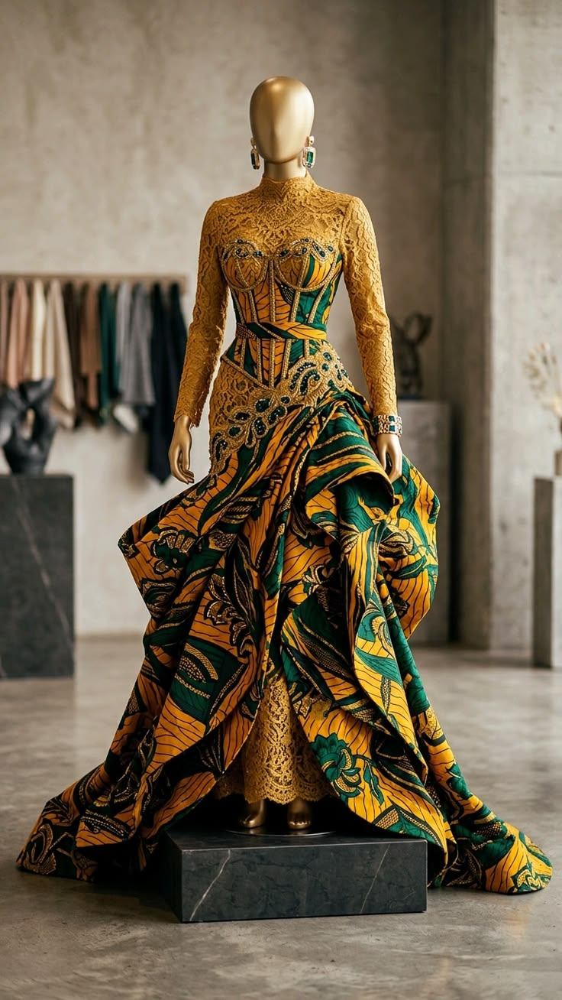
Made to MeasureLook 03
Quick View & Details
The Imperial Emerald Cape
03
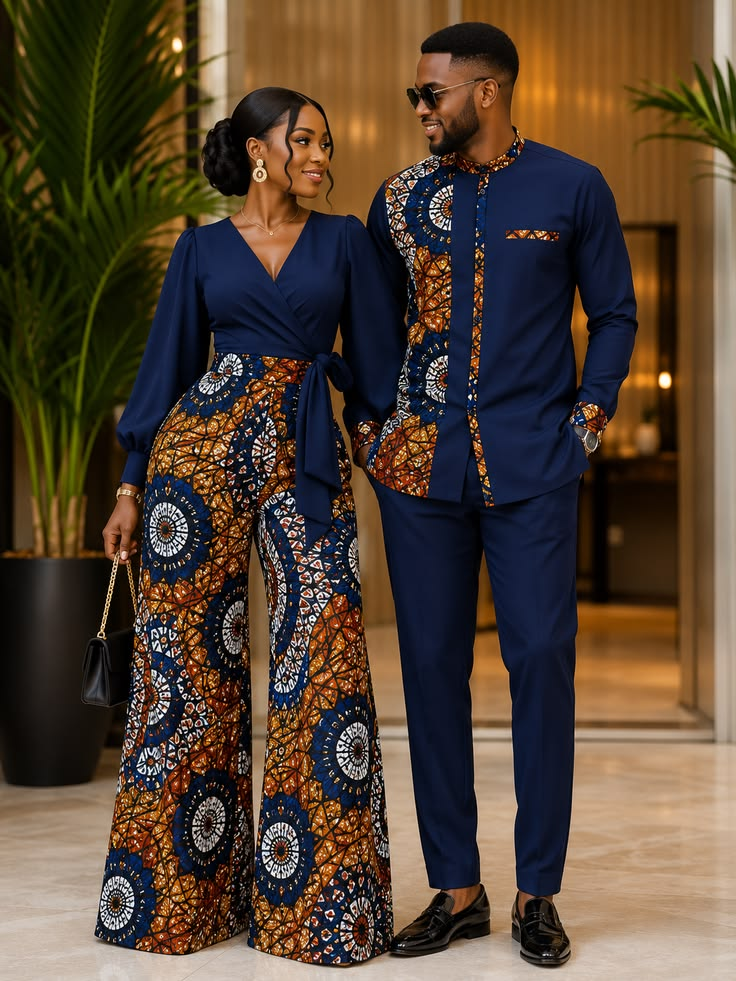
Made to MeasureLook 04
Quick View & Details
The Midnight Mosaic Pair
04
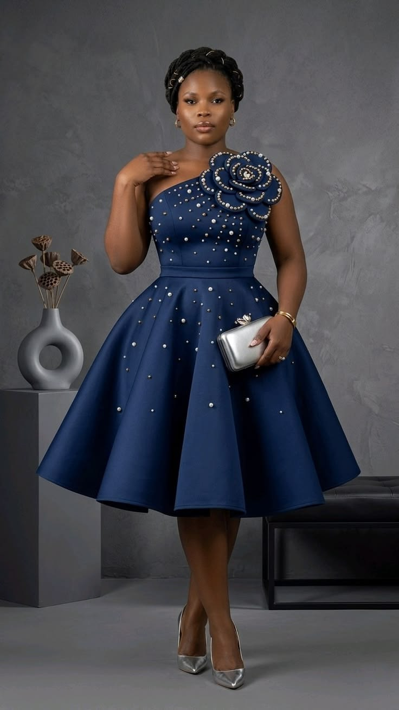
Made to MeasureLook 05
Quick View & Details
The Midnight Pearl Cocktail
05
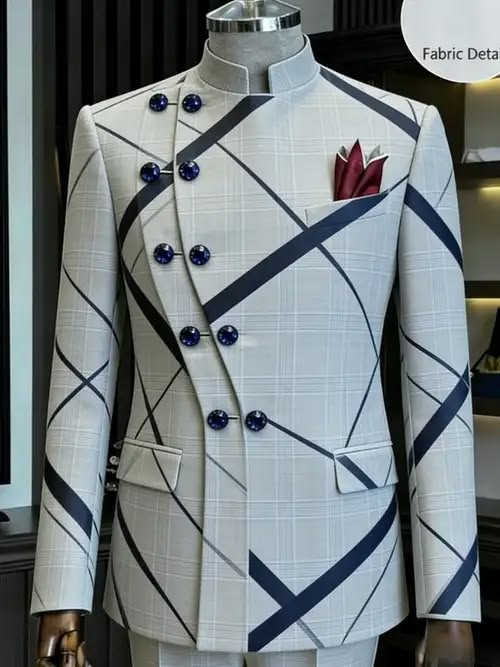
Made to MeasureLook 06
Quick View & Details
The Asymmetric Grid Jacket
06
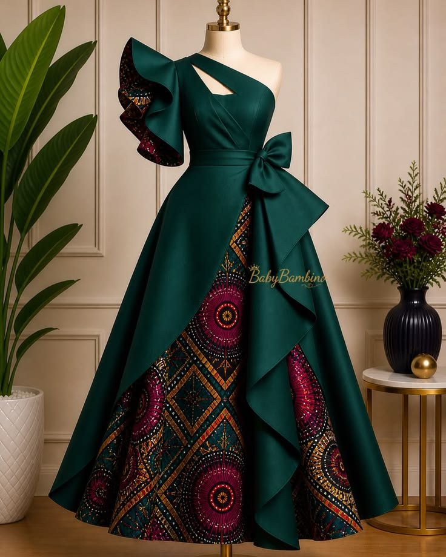
Made to MeasureLook 07
Quick View & Details
The Veridian Halter Ensemble
07
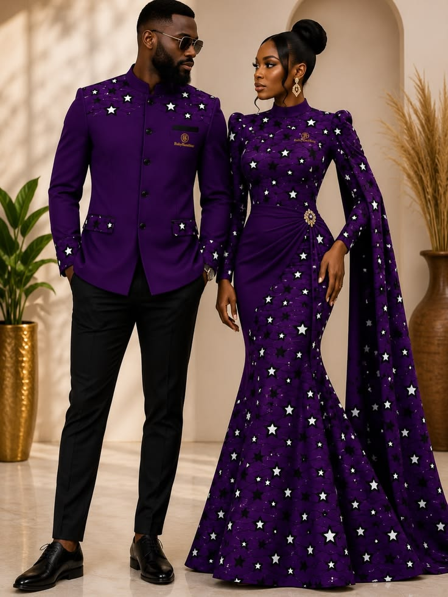
Made to MeasureLook 08
Quick View & Details
The Cosmic Purple Duo
08
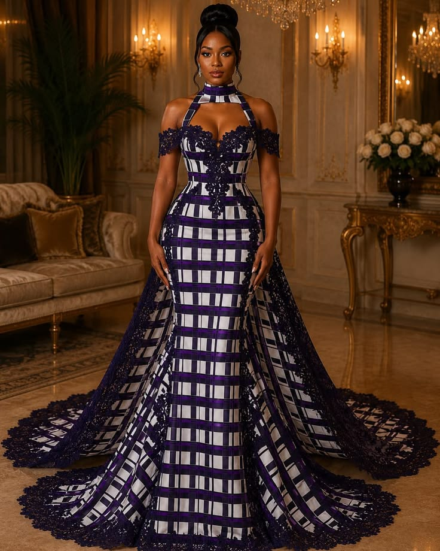
Made to MeasureLook 09
Quick View & Details
The Amethyst Plaid Ballgown
09
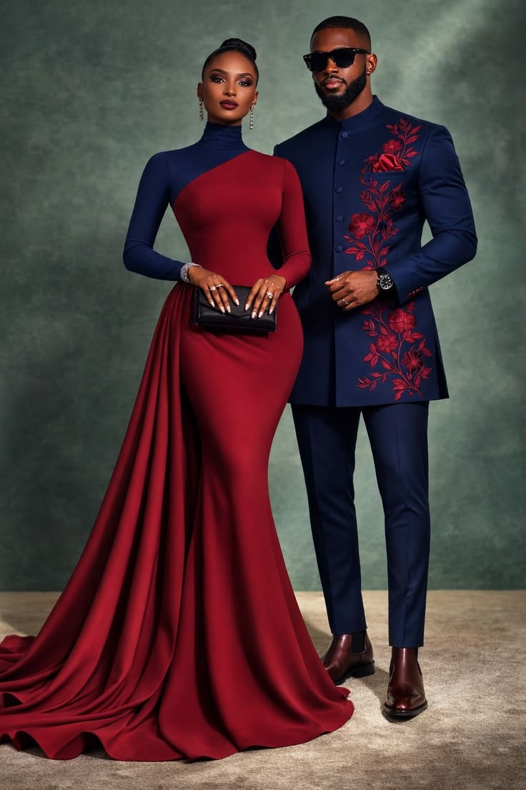
Made to MeasureLook 10
Quick View & Details
The Crimson & Cobalt Affair
10
The Craft
01
A private session in-atelier or virtual, to select fabric, hardware, and silhouette.
02
A muslin toile is cut and fitted to your exact measurements before a single cut of final fabric.
03
Your garment is built entirely by hand and machine across 60–130 hours, then delivered with a final fitting.
The Atelier Journal
A closer look at the hands, tools, and hours behind every Obuasi piece.
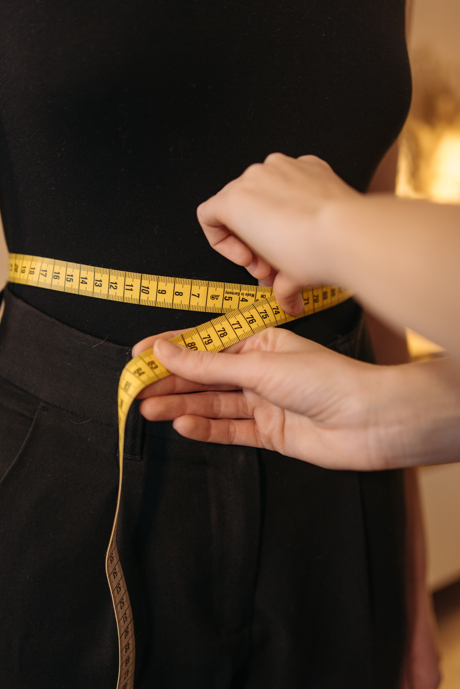
Entry 01 — The Measure
The journey of an extraordinary garment begins with the precision of a single measurement. In our workroom, we honor the unique proportions of every individual who enters our space, ensuring that every curve, line, and silhouette is met with uncompromising exactness and meticulous hand-craftsmanship.
Read the Story
Entry 02 — The Sketch Book
Where ideas take their initial form on paper before a single piece of fabric is cut.
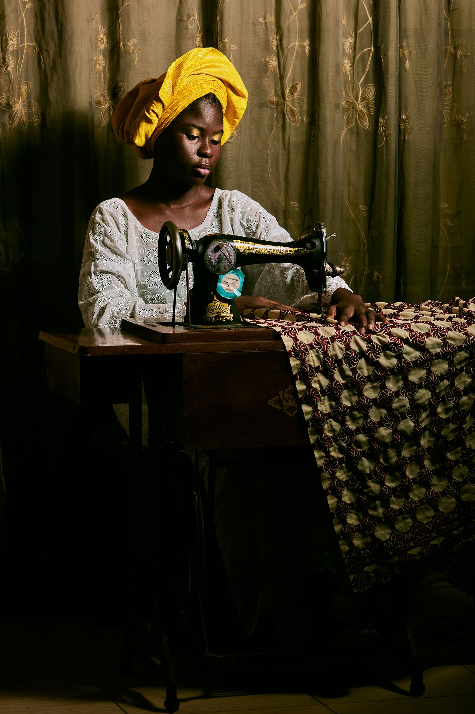
Entry 03 — The Working Room
Bringing the design to life on the machine, stitch by careful stitch.
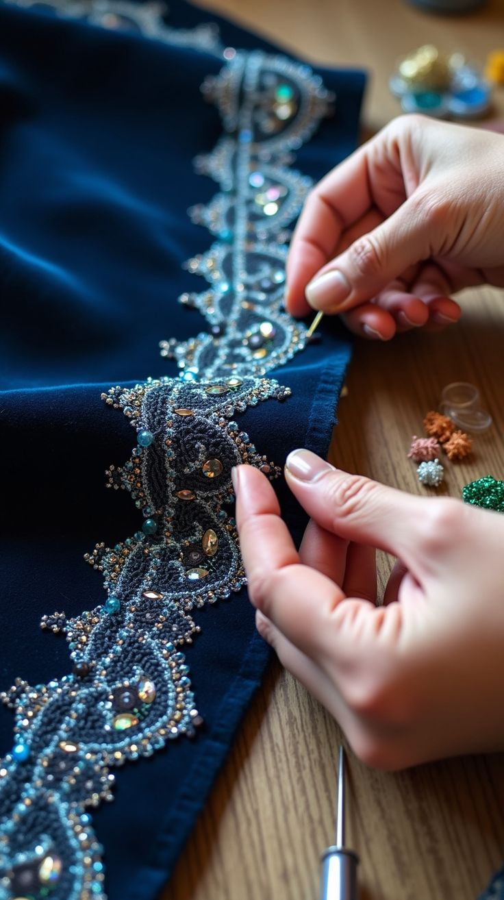
Entry 04 — The Beadwork Table
A single beaded bodice can take upwards of forty hours. We sat beside our lead embroiderer to count the stitches — and lost count within the first ten minutes.
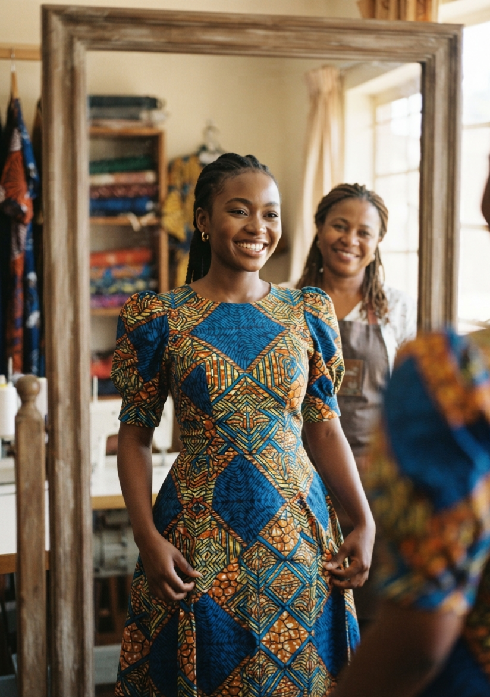
Entry 05 — The Finished Piece
The moment a bespoke creation comes to life, showcasing vibrant patterns, expert tailoring, and effortless elegance.
Private Consultation
Consultations are available by appointment in Accra, or virtually worldwide. Message us directly to begin.
Message on WhatsApp hrtechnologies003@gmail.comVisit the Atelier
Fabric, hardware, and fit read differently in person. We welcome clients into the workroom by appointment.
Visiting Hours
Monday – Saturday
10:00 – 18:00 GMT
By private appointment only
Virtual consultations also available for clients outside Accra.
Nothing saved yet. Tap the heart on any look in the Lookbook to start curating your own custom collection.
Every saved look can be custom-made to your exact measure, fabric, and colourway.
Inquire About Saved Looks